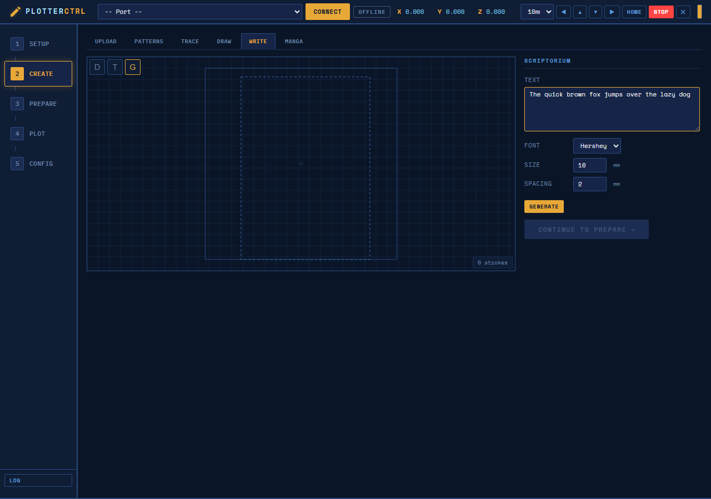

The Scriptorium
Single-stroke cursive font with automatic letter chaining. Lowercase letters flow into continuous pen strokes — no lift, no gaps. Also includes classic Hershey vector fonts.

Script Simplex Cursive — connected lowercase strokes rendered as continuous pen paths. The quick brown fox jumps over the lazy dog.

Scriptorium Panel — font selection, size, word-wrap, and instant canvas preview